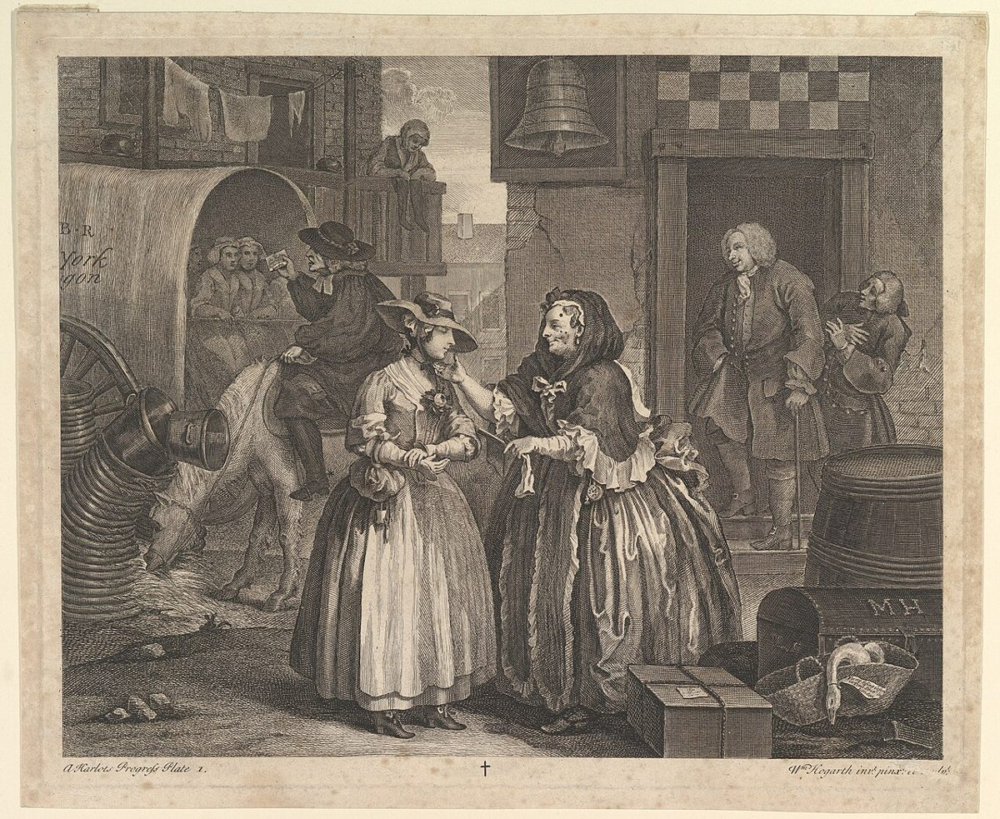
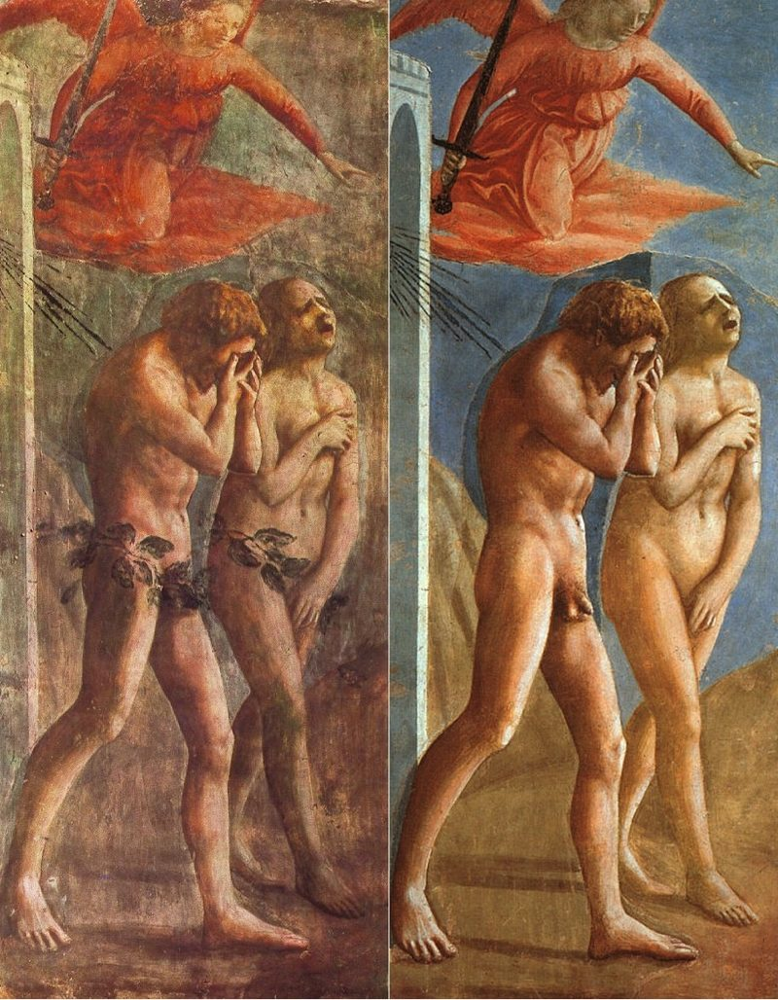

Louise Perry
Reino Unido
The Case Against the Sexual Revolution (2022)
Feminista secular crítica da revolução sexual, fala afiada.
Saiba mais →Um ensaio sobre a perda da inocência no Ocidente
↓Capítulo I
Em 1934, o antropólogo J. D. Unwin publica o livro "Sex and Culture", que analisa 80 sociedades primitivas e as grandes civilizações mundiais e propõe a tese de que o nível de energia criativa de uma sociedade é inversamente proporcional ao nível de relaxamento sexual: quanto mais libertina a sociedade, menos ela é capaz de grandes feitos. Em 1939, o sociólogo Norbert Elias lança o livro "O Processo Civilizatório", em que argumenta que a capacidade de sentir vergonha e repulsa, agindo como regulador da moral social, possibilitou o florescimento da civilização.
O documentário propõe que a perda da inocência sexual leva ao cinismo, que gera um ambiente hostil ao idealismo e às virtudes, que permite o avanço da subversão e da corrupção, ou seja, a perda da inocência impossibilita a própria civilização, como vemos no aviso de John Adams de que a República americana foi feita apenas para "povos virtuosos", ou na assim chamada "crise de competência": um declínio generalizado percebido hoje em dia nas instituições, governos, serviços, infraestrutura, em certas vertentes da técnica e da arte etc.
"Inocência" é um grande ensaio sobre sexo e cultura que parte da percepção incômoda de que os grandes personagens da civilização ocidental nem sequer conseguiriam imaginar os tipos de depravação a que qualquer criança de 11 anos está exposta no celular hoje em dia, e pergunta: É possível uma reversão de curso? Assim como a virgindade, a inocência (e a civilização que ela possibilita), uma vez perdida, é perdida para sempre?
Capítulo II
De 1800 a hoje

1839
A nudez real passa a ser reproduzida em série (nus fotográficos em Paris nos anos 1840).
Consequência → A imagem sexual vira mercadoria reproduzível sem limite.
Início do séc. XIX e 1864
O Estado passa a administrar o vício em vez de proibi-lo.
Consequência → O debate atual sobre a “profissional do sexo”.
Contraponto: provocou o abolicionismo de Josephine Butler.
1905
O sexo vira centro da identidade e a repressão vira doença.
Consequência → O “eu expressivo” contemporâneo.
Anos 1920
O namoro sai do controle da família.
Consequência → A cultura do encontro sem mediação, herdada pelos aplicativos.
1948 e 1953
“Todo mundo faz”; o desvio vira estatística normal.
Contraponto: amostra enviesada, com presidiários e voluntários.
1953
A pornografia vira estilo de vida respeitável de classe média.
Consequência → O sexo como consumo.
1960
O sexo se separa da reprodução.
Consequência → A perda do caráter de tabu do sexo.
Nota: no início era receitada sobretudo a mulheres casadas.
1973
A Suprema Corte dos EUA define obscenidade por padrões locais, abrindo na prática o mercado do pornô.
Consequência → A indústria pornográfica legal.
Nota: Hustler v. Falwell (1988) tratou de sátira, não de obscenidade; é símbolo forte e ótimo local de filmagem.
Meados dos anos 1990 a 2007
Acesso gratuito, ilimitado, anônimo e ao alcance de crianças.
Consequência → A criança de 11 anos com celular.
Capítulo III

Para pensar a perda da inocência, ouvimos vozes que defendem a tese, vozes que a matizam e vozes que a contestam. Filósofos, historiadores, sociólogos e pesquisadores de vários países compõem um debate em que nenhuma conclusão é dada de antemão.
Reino Unido
The Case Against the Sexual Revolution (2022)
Feminista secular crítica da revolução sexual, fala afiada.
Saiba mais →EUA
Adam and Eve after the Pill (2012)
Liga a revolução sexual à crise da família e da fé.
Saiba mais →Reino Unido / EUA
The Rise and Triumph of the Modern Self (2020)
Genealogia filosófica do “eu expressivo”; contraponto culto a Foucault.
Saiba mais →Reino Unido / EUA
Pornland (2010)
Pesquisa a exposição de crianças à pornografia; preside a Culture Reframed.
Saiba mais →Brasil
Filósofo, FAAP e PUC-SP
Pessimista e provocador; concorda com o diagnóstico, duvida do retorno.
Saiba mais →EUA
The Anxious Generation (2024)
Dados sobre smartphone e infância; acredita que a infância pode ser recuperada.
Saiba mais →Brasil
Histórias íntimas
Historiadora da intimidade no Brasil, da colônia a hoje.
Saiba mais →França / Israel
The End of Love (2019)
Culpa o capitalismo, não a perda da virtude.
Saiba mais →EUA
The Way We Never Were (1992)
Desmonta a ideia de uma era de inocência.
Saiba mais →Brasil
Desejos digitais (2017)
Linha foucaultiana; lê o pânico moral sexual como construção social.
Saiba mais →